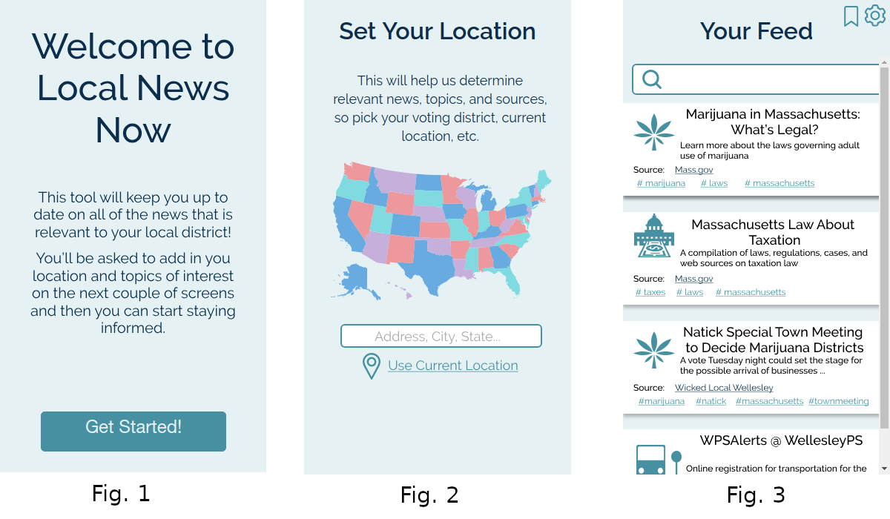
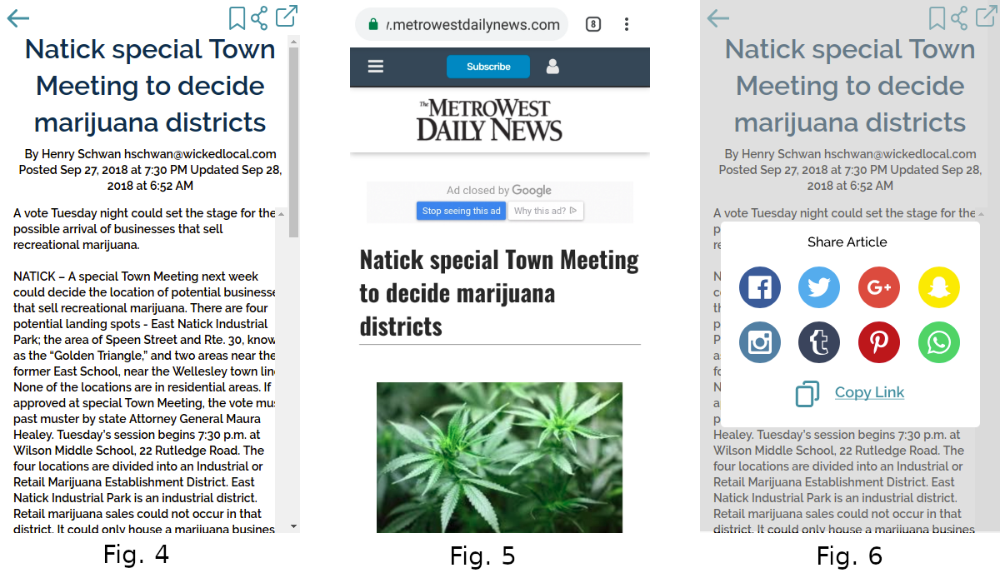
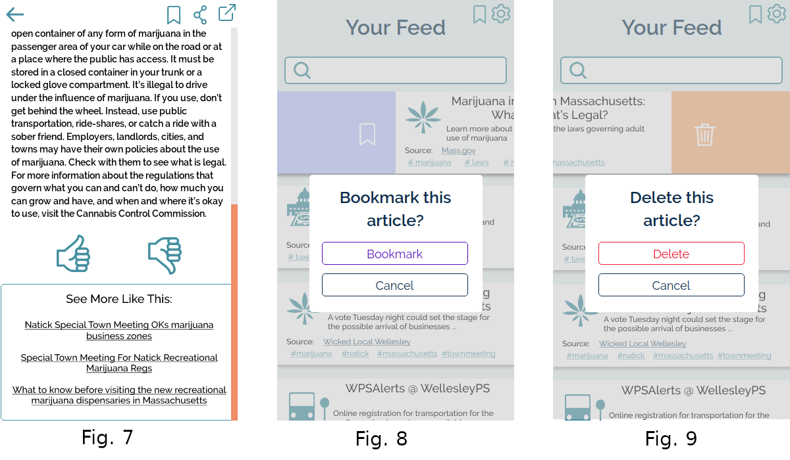

Final Refinement Report
Final Design
We design an mobile application that informs users with personalized local news about user-selected topics. Our application starts by enabling the users to customize their settings with location and issue-specific selections. After selecting their preferred location, the user will be able to see a customized newsfeed with article previews that are related to the selected location. If the user wants to omit or emphasize any topic, the user may navigate to the settings page to do that. On the other hand, if the user wants to keep a particular article, they may bookmark the article for future reference. This intuitive experience will make it easy for any user to find relevant information fast.
Design
During the initial setup of the app, they are greeted with a welcome screen (Fig. 1) then asked to select the location of their choosing (Fig. 2). After this initial setup they are directed to their feed (Fig. 3), which now contains a list of trending articles relevant to that location. We altered this step based on user feedback to keep it as simple as possible so that users can get to the main function of the app as soon as possible. We also try to prevent errors during the setup process by always allowing users to go back. The iconography in the feed relies on user recognition a real world objects to allow users to avoid close reading.
 Selecting an article brings the user to a page (Fig. 4) that contains the article in readable, plain text. From here, the user exit the app to the original article, post, etc. (Fig. 5) or share the article via another app (Fig. 6). Each article also includes a list of related articles that the user can click on to view in the same intermediate page layout (Fig. 7). From the feed, the user can also swipe right to bookmark an article (Fig. 8) or swipe left to remove it (Fig. 9). This feature takes advantage of common mobile interactions and iconography (the trashcan and bookmark symbol).
The user can also navigate to the settings screen from the feed. Here, a user can select preferred topics, blacklisted topics, and blacklisted sources (Fig. 10). The algorithmic aspect of the app will also help populate this screen based on other user actions in the app. If the user wants to alter the order of their preferred topics, they can rearrange by holding the topic and dragging it to the more accurate location (Fig. 11). Users can also remove and add items to the list of preferred topics, blacklisted topics, and blacklisted sources if they so desire (Fig. 12). The design of the settings page makes it clear that the preferred topics are moveable through the use of selection dots and relies on common mobile interaction patterns. The deletion feature mimic the deletion feature in the main feed and uses swiping to match common mobile interactions.
Design Choices
The majority of our design choices and reasoning are outlined in the writeup from the Design Refinement Phase. The most important changes that we made include, the removal of the user profile creation, allowing users to get to the primary function of the app more quickly. Another important change that we made to allow the removal of a profile creation was a shift in emphasis from exclusively a user selection of topics and sources to algorithmic suggestions combined with optional user preferences that can be set on the settings page. Along with this change, we needed to alter our settings screen to include a basic and advanced settings screen.
During the Final Refinement Phase, we continued to work on developing these aspects of our design. We received feedback during some initial stages of informal usability testing that users found the existence of an advanced settings screen (Fig. 1) to be unnecessary and that they were unlikely to actually use the majority of features within that. We chose to investigate this feedback further in our informal and formal usability testing. More information and the results from this testing can be found here. To review those results, all of those that we talked to agreed that having a separate page just for the advanced settings was unnecessary, but that just the basic settings did not contain all of the features that they desired. This led us down the path of taking the most important aspects of the advanced settings (location changes, preferred topics, blacklist topics, blacklist sources) and place them onto one initial screen. We also added sub-headings so that users would not need to intuit what was required of them. Figure 2 shows the results of these changes.
Motivation
We designed Local News Now to address the disconnect between popular, not-as-applicable news and not so popular news that will impact the user’s daily lives. According to our research and user outreach studies, we identified that young voters struggle to keep themselves informed of news they care about. They keep themselves updated primarily through social media, but, according to our user research, those platforms are filled with too much distractions. Examples of distraction include pop-ups, advertisements, and requests to donate. Finding news amid all the distractions has been an ordeal for many of our users, so we knew there was a need for Local News Now.
We looked into several alternatives, such as Settle It!, Countable, Brigade, and icitizen. Settle It! lacked the customization that we wanted. We could only filter our news by a search bar, and we were always prompted with a quiz to begin. The app also focused on national news, whereas we wanted to focus on local news. One thing we liked about the app is that it had fact-checking. Although we did not integrate fact-checking into our newsfeed, we think we can incorporate it with additional time and resources.
Countable had more features. We got to see representations of the app users and visualizations about how your representatives voted over time. It also had features that encourages you to take action. Despite the numerous features, we did not like how the news was presented to us. The app could not make distinctions about anything issue-specific, and users could not do anything to change that. We wanted to give that power to our users with our app.
Brigade was more action-centered. We had the ability to sign petitions, create groups to take action on a topic, and contact representatives. It allows you to keep up to date on news surrounding issues and your current petitions. While the app definitely encourages engagement, it is lacking in a few ways. There are not many petitions or polls to get involved with so there is not much reason to check it regularly and stay updated. It also doesn’t allow you to see a comparison of how you have voted compared to your representatives or candidates. The news that you can stay updated on is restricted to surrounding specific issues and positions.
icitizen is based around users submitting content, such as polls or ideas, and other users giving their feedback with comments or voting. The problems with the app surrounded the fact that most of the content was user created and a lot of it was polarizing. The only content that was not user created was profile information about government officials and candidates. Overall, icitizen lets users get an idea of other user’s opinions but not get relevant information from trusted news sources.